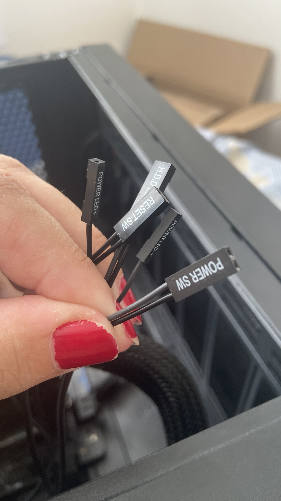
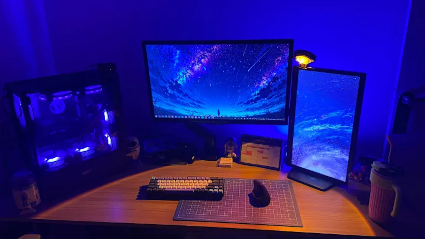

Montando PC pela 1ª vez

Ontem fez 1 ano que montei meu primeiro computador pessoal sem nenhuma experiencia, já estava querendo escrever sobre as delicias e dores desse desafio, então aproveitarei esse marco para isso.
Fez um ano agora mas começou a ser planejado anos antes, fui comprando as peças aos poucos da forma que minha organização técnica e financeira permitia, usando o https://meupc.net/ e dicas de amigos para saber a compatibilidade das peças. Enquanto planejava este era o meu PC: caixas sendo empilhadas num canto.

Sempre fui adepta ao faça você mesmo, cresci morando num prédio com oficina no térreo e muito da minha trajetória, estilo e escolhas de vida refletem saber mexer com ferramentas e ter facilidade para montagem, mas admito que o plano inicial aqui era contratar alguém para isso. Embora estivesse curiosa para montar eu mesma, não estava disposta a arriscar anos de planejamento e dinheiro, afinal, tenho várias outras coisas para montar, inventar e consertar… mas em 2024 comecei meus estudos em computação e a vontade de montar eu mesma foi vencendo o medo de errar. Decidi que ia encarar esse ciclo de descobertas, após o hardware vem o software, e já estava mergulhada em Linux, foss, código, configs, terminal e afins enquanto esperava a ultima peça dele chegar: o processador. Ah o processador! Foi a primeira peça que encaixei na placa mãe suando frio e desejando mentalmente não ter colocado pouca pasta térmica ou entortado algum pino. Daí pra frente fui montando o resto com brilho nos olhos e baseada nas minhas 982789178927189 horas de vídeos de montagem de PC no youtube.


Já estava testando distros Linux no laptop e acabei por escolher o Mint, mas não vamos mexer nesse vespeiro de batalhas de distros nesse post e pularemos direto pros dias atuais, afinal, como está meu garoto pós 1 ano de uso com experimentos, boots, projetos, git, códigos, edição de imagens, blender, jogos e testes de resfriamento?

Está sendo meu sonho. Anos sendo usuária de laptop e posso dizer que ter um PC é outro mundo do qual eu precisava. Ainda mantenho o laptop com windows para programas adobe e mobilidade mais sobre meu setup completo aqui mas o PC é minha principal máquina da qual tenho imenso prazez de saber sobre cada peça, cabo, parafuso e programa. Bom pré feriado a todos!